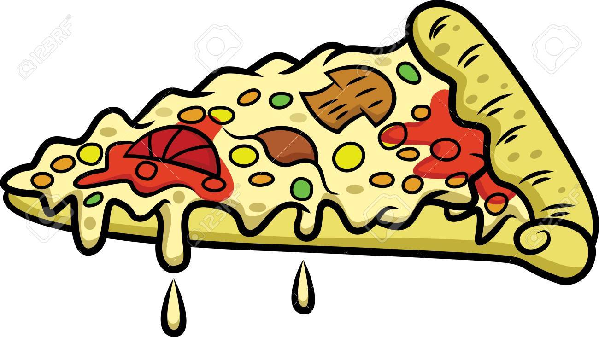
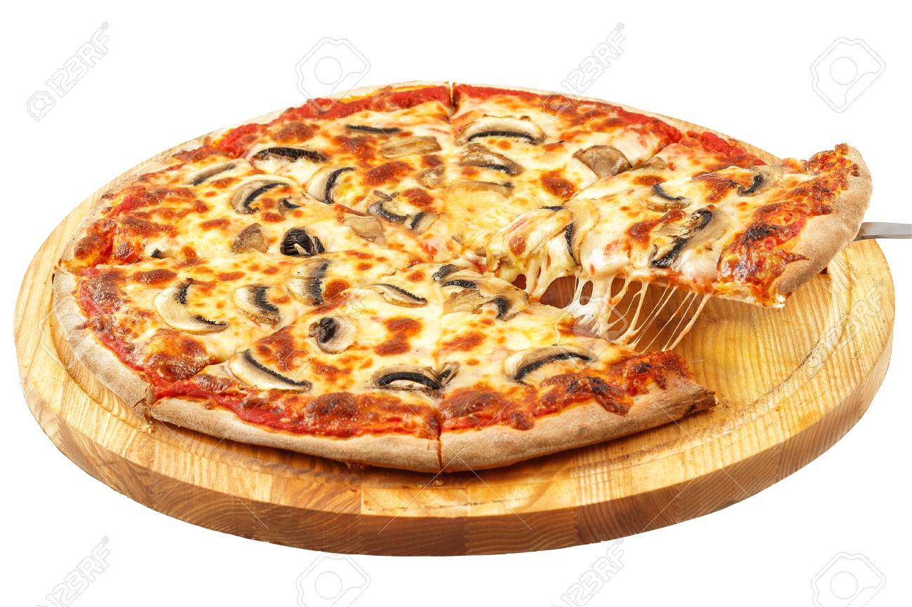

PIZZA 
This no-yeast pizza dough is quick to make and bakes up into a
tender and tasty crust for your favorite pizza toppings.
This was an awesome recipe, really enjoyable.
Ingredients
- Flour: This yeastless pizza crust starts with all-purpose flour.
- Baking powder: Without yeast, the pizza dough needs baking powder to rise.
- Salt: A pinch of salt enhances the flavor and strengthens the gluten.
- Milk: You’ll need ½ cup of fat-free milk.
- Olive oil: Olive oil locks in moisture and keeps the dough from drying out.
Steps
- Preheat the oven to 400 degrees F (200 degrees C).
- Bake the crust in the preheated oven for 8 minutes.
- Top with your favorite toppings and bake until the crust is golden brown, about 10 to
15 minutes more.
Additional information
If you’re short on time, you can make the no-yeast pizza dough up to one day in advance.
Simply store it in an airtight container in the refrigerator. Once the dough is baked,
you can store it in the refrigerator for up to three days.
